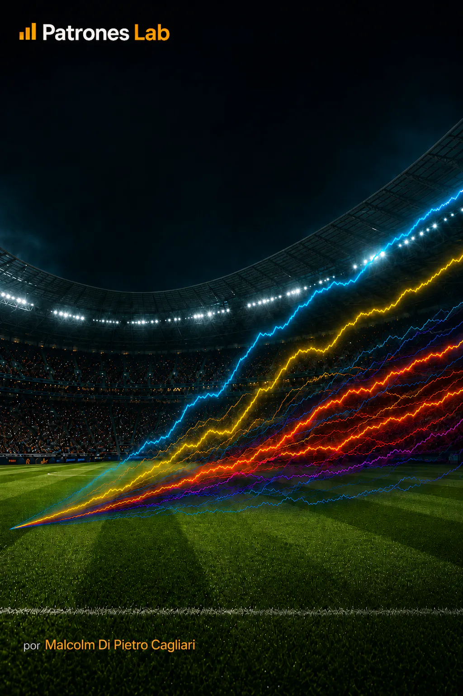

Gols esperats en el futbol
Model de regressió logística per estimar la probabilitat de gol de cada xut amb dades públiques de StatsBomb, validació per partits i aplicació al Mundial de Qatar 2022.
Model de regressió logística per estimar la probabilitat de gol de cada xut amb dades públiques de StatsBomb, validació per partits i aplicació al Mundial de Qatar 2022.

Model probabilístic de perill esperat en el futbol amb dades públiques de StatsBomb. Estima la probabilitat de gol en les 5 jugades següents.

Anàlisi d'estadístiques del Mundial 2022 amb dades públiques de StatsBomb per resumir rendiments individuals i comparar jugadors mitjançant un radar de percentils.

Simulació d'un milió d'escenaris del Mundial 2026 amb valoracions Elo per estimar la probabilitat d'arribar a semifinals, disputar la final i guanyar el títol.

Simulació d'un milió d'escenaris de LaLiga 2026/27 amb valoracions Elo per estimar les probabilitats dels resultats més importants del campionat.

Model de gols amb distribució de Poisson per calcular la força ofensiva i defensiva de cada equip, combinat amb la simulació de Montecarlo per estimar les probabilitats del campionat.

Simulació d'un milió d'escenaris de la Nations League 2026/27 amb valoracions Elo i un model de gols basat en Poisson per estimar les probabilitats de guanyar el grup, avançar en les eliminatòries i guanyar el títol.

Model binomial per analitzar les probabilitats de gols i resultats a partir de xuts i taxes de conversió de 36 clubs de la Champions League 2026/27.